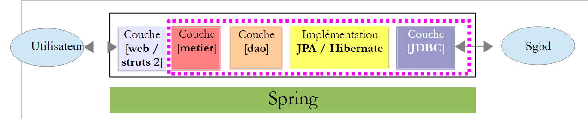

20. Estudo de caso – versão 2
Apresentamos agora a versão final de nossa aplicação:
 |
O novo projeto NetBeans [pam-02] é obtido por meio da cópia do projeto [pam-01]:
 |
- em [1], copiamos o novo projeto
- para [2], renomeia-se o novo projeto para [pam-02] e especifica-se sua pasta
- em [3], o novo projeto [pam-02]
Para “conectar” a camada real [metier] à camada web que criamos, é preciso fazer três coisas:
- excluir a camada simulada [metier] que havíamos criado
- configurar o Spring para que ele instancie a camada real [metier], que se encontra no arquivo [pam-spring-metier-dao-jpa-hibernate.jar].
- adicionar ao projeto todos os arquivos necessários (Spring, Hibernate, JPA, driver JDBC do MySQL).
O arquivo de configuração do Spring [WEB-INF/applicationContext.xml] fica da seguinte forma:
<?xml version="1.0" encoding="UTF-8"?>
<beans xmlns="http://www.springframework.org/schema/beans" xmlns:xsi="http://www.w3.org/2001/XMLSchema-instance"
xmlns:tx="http://www.springframework.org/schema/tx"
xsi:schemaLocation="http://www.springframework.org/schema/beans http://www.springframework.org/schema/beans/spring-beans-2.0.xsd http://www.springframework.org/schema/tx http://www.springframework.org/schema/tx/spring-tx-2.0.xsd">
<!-- camadas de aplicação -->
<!-- web -->
<bean id="config" class="web.Config" init-method="init">
<property name="metier" ref="metier"/>
</bean>
<!-- negócio -->
<bean id="metier" class="metier.Metier">
<property name="employeDao" ref="employeDao"/>
<property name="cotisationDao" ref="cotisationDao"/>
</bean>
<!-- DAO -->
<bean id="employeDao" class="dao.EmployeDao" />
<bean id="indemniteDao" class="dao.IndemniteDao" />
<bean id="cotisationDao" class="dao.CotisationDao" />
<!-- configuração JPA -->
<bean id="entityManagerFactory" class="org.springframework.orm.jpa.LocalContainerEntityManagerFactoryBean">
<property name="dataSource" ref="dataSource" />
<property name="jpaVendorAdapter">
<bean class="org.springframework.orm.jpa.vendor.HibernateJpaVendorAdapter">
<property name="databasePlatform" value="org.hibernate.dialect.MySQL5InnoDBDialect" />
</bean>
</property>
<property name="loadTimeWeaver">
<bean class="org.springframework.instrument.classloading.InstrumentationLoadTimeWeaver" />
</property>
</bean>
<!-- a fonte de dados DBCP -->
<bean id="dataSource" class="org.apache.commons.dbcp.BasicDataSource" destroy-method="close">
<property name="driverClassName" value="com.mysql.jdbc.Driver" />
<property name="URL" value="jdbc:mysql://localhost:3306/dbpam_hibernate" />
<property name="username" value="root" />
<property name="password" value="" />
</bean>
<!-- gerenciador de transações -->
<tx:annotation-driven transaction-manager="txManager" />
<bean id="txManager" class="org.springframework.orm.jpa.JpaTransactionManager">
<property name="entityManagerFactory" ref="entityManagerFactory" />
</bean>
<!-- tradução de exceções -->
<bean class="org.springframework.dao.annotation.PersistenceExceptionTranslationPostProcessor" />
<!-- persistência -->
<bean class="org.springframework.orm.jpa.support.PersistenceAnnotationBeanPostProcessor" />
</beans>
As linhas 36 a 41 configuram o acesso ao banco de dados.
A adição das novas bibliotecas (Spring, Hibernate, JPA, driver JDBC do MySQL) é feita a partir da pasta [lib] [2]. Utiliza-se a pasta inteira. Há várias dezenas de arquivos .jar a serem adicionados [1]:
 |
Foi bastante difícil montar essa biblioteca, pois esses frameworks às vezes utilizam os mesmos arquivos. Portanto, é necessário remover as duplicatas. Esses arquivos foram reunidos na pasta [lib] [2], no arquivo de exemplos deste documento, para que o leitor não precise reconstruir essa biblioteca por conta própria.
É isso. O novo aplicativo [pam-02] passará a funcionar com o SGBD. Aqui está uma captura de tela de um cálculo de salário:
 |
Desta vez, o salário calculado é o salário real e não o salário fictício da versão 1. O leitor é convidado a testar o novo aplicativo.